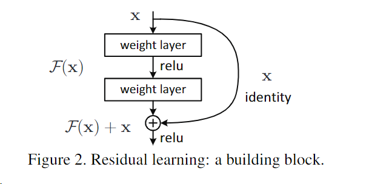
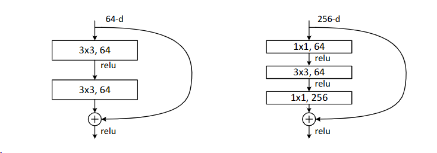
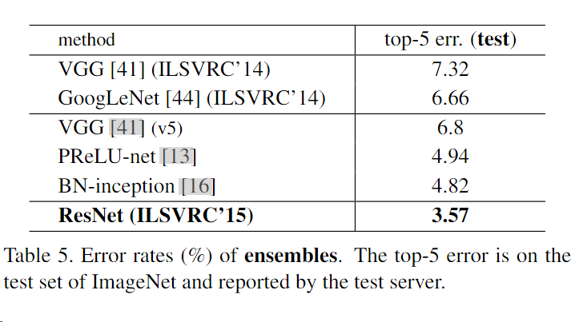
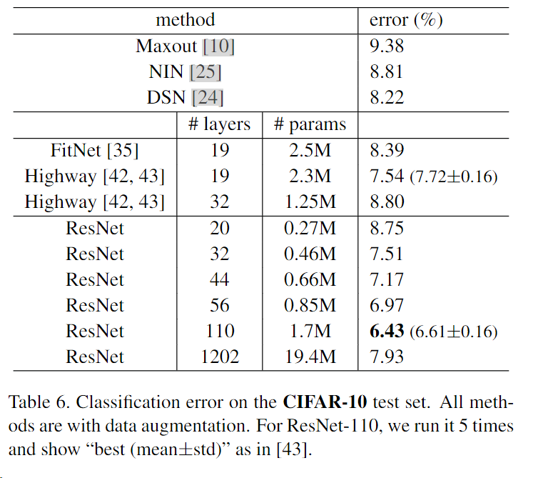

Deep Residual Learning for Image Recognition
题目：用于图像识别的深度残差学习
0 摘要
上来先提出问题：更深的神经网络更难训练，所以作者提出了本文要介绍的残差网络，来解决这个事情。这样的模型不仅更深而且复杂度更低，取得了非常不错的效果。
1 介绍
开头先说明深度卷积神经网络的贡献，深度是能进行很好分类的关键。提出第一个问题，梯度消失和梯度爆炸，这个问题已经被初始归一化和中间层归一化极大缓解；提出第二个问题，随着网络深度的增加，准确率会饱和然后迅速下降，并且这并不是因为过拟合，可能是额外增加了层导致的。增加层理论上不应该增加误差，因为最少也是个identity mapping，即恒等映射，sgd优化器实验上做不到。
随后提出本文的方法，显式构造一个恒等映射，让你深层网络不会比浅层网络更差。要学的东西是H(x)，现在的输入是x，但是不让它去学H(x)，而是让它去学F(x) = H(x)-x。并且这种操作就是很简单的恒等映射，一种捷径，不会增加参数和复杂度，仍然可以使用sgd和反向传播。

在ImageNet和CIFAR-10等数据集上的效果也很不错，有很好的成绩。残差学习的原理是通用的，希望可以解决不同的问题。
2 相关工作
残差表示：机器学习中的boosting，用残差来梯度提升，和本文中提到的类似。
捷径连接：之前就有人做过类似的用来防止梯度爆炸和消失了。但是还是没有本文做的好，主要是捷径一直打开，且就是一个简单的加法，在深度极度增加的情况下依然不错。
3 深度残差学习
3.1 残差学习
介绍了本文的目标不是H(x)，而是它的残差函数H(x)-x。如果x本身有些已经很优秀了，那就保留，学出来的F(x)对应的部分应该是趋近于0的。
3.2 通过捷径进行恒等映射
x和F的输出必须是相同维度的。公式不列了，就是解释上面的哪个结构，通常有两个卷积，两个卷积中间有个relu，最后再和x相加输出。
3.3 网络架构
灵感来自于VGG网络，卷积层大多有3×3的滤波器，并遵循两个简单的设计规则：（i）对于相同的输出特征图大小，各层有相同数量的滤波器；（ii）如果特征图大小减半，滤波器的数量增加一倍，以保持每层的时间复杂性。我们通过跨度为2的卷积层直接进行下采样。该网络以一个全局平均池化层和一个带有softmax的1000路全连接层结束。
相比vgg，有更深的层，更少的卷积核，更少的计算量。
如果参数相同，则直接相加；如果维度不相同则用1*1的卷积改变一下。
一般情况下我们使得通道数*2，高宽各减半，就是步幅是2。
3.4 实现
和ImageNet一样先做一些图像增强，每次卷积和激活之前，我们都使用BN，即批量归一化，按照一定的方法初始化参数。使用sgd优化器，批量大小是256，学习率0.1，趋于平稳就除以10，使用0.0001权重衰退和动量为0.9，不使用dropout。迭代次数60*10**4。
测试的时候也要裁剪，然后最后结果平均。
4 实验
4.1 ImageNet 分类
普通网络34层比普通网络18层已经显示出来这种衰退，即准确率下降了。残差网络的规模和普通网络一样，也是一个34一个18，残差网络34层的结果要比18层的好，退化问题得到了解决，并且残差网络收敛更快。
列出来三种链接方式，填零连接，直接相加连接和使用1*1的卷积核后再进行连接。比较了这三种不同方法的效果，看起来用点卷积还是比较好的。但是作者不想用投影，计算量增大了一些。
设置更深的网络结构，作者使用了三层来代替两层的块。三层是1×1、3×3和1×1卷积，其中1×1层负责减少然后增加（恢复）维度，使3×3层成为输入/输出维度较小的瓶颈。复杂度是差不多的。
总体来说是先降维，再运算，再升维然后输出。

在此基础上构建100多层的网络，都没有出现衰退的现象。

和原先比较先进的网络进行对比：

4.2 CIFAR-10 和分析
捷径全部使用的是恒等映射。使用0.0001权重衰减，0.9的动量，使用bn，使用之前的初始化参数方法，没有dropout层，两个GPU上训练，128批量大小，0.1的学习率，在达到一定迭代次数后除以10，进行了简单的数据增强。
使用了20，32，44，56这样深度的普通网络和残差网络。发现结论和之前的类似，还是残差结果会好一点。同样还使用了110层的网络，发现0.1的学习率初始化较大，可以先用0.01的学习率进行预热，知道训练误差低于80%，再切换到0.1，再进行训练。
对比bn前网络的方差，发现残差网络的变化幅度小。
探索超过1000层的resnet，但是结果是1000多层也能用，但是效果比100多层的要差。作者认为是出现了过拟合现象，可以考虑之后使用更强的正则化来进行调整。

4.3 PASCAL和MS COCO上的物体检测
替换原有基于的VGG-16之后，resnet使得模型有了更好的检测效果。
5 总体评价
- 介绍部分（1）：写的比较全面，是对摘要的一个扩充版本，比较不错。
- 深度残差学习部分(3.4)：其中初始化参数，最好还是指明一下，原文直接说和【13】文章一样。
- 残差是改良了梯度，使得梯度更稳定，把链式法则的梯度相乘变成了梯度相加，不容易梯度消失和梯度爆炸。